The Wonder Land Restaurant Management System is a full-featured web-based platform that unifies culinary ordering, shopping cart operations, multi-gateway payments, live order state tracking, table reservations, verified patron reviews, and back-office restaurant management.
This design document outlines the complete Object-Oriented Analysis and Design (OOAD) models and provides full traceability to the operational GUI application.
| Actor Name | Role & Responsibilities | Primary Interactions |
|---|---|---|
| Customer / Guest | External end-user seeking gourmet meals or table seating. | Browse menu, filter categories, search dishes, manage cart, checkout with multiple payment methods, track order live via stepper, book tables, submit reviews. |
| Restaurant Admin | Internal general manager with complete oversight. | Authenticate via PIN (admin123), manage menu items (CRUD), inspect financial KPIs, advance order lifecycle states, audit receipts, oversee reservations. |
| Kitchen Staff / Chef | Culinary fulfillment team responsible for preparation. | Receive order tickets, transition orders to "In Kitchen" (Cooking), prepare dishes, mark orders as "Out for Delivery" / ready for courier. |
| Host / Floor Staff | Dining room greeter managing table turnover. | Inspect reservation schedule, greet arriving guests, seat dining parties, clear and complete table bookings. |
Illustrates the functional system boundary, actors (Customer, Admin, Kitchen Chef), core use cases, and relationships including <<include>> (UC04 Checkout includes UC05 Process Payment) and <<extend>> (UC01 Browse extends UC02 Category Filter).
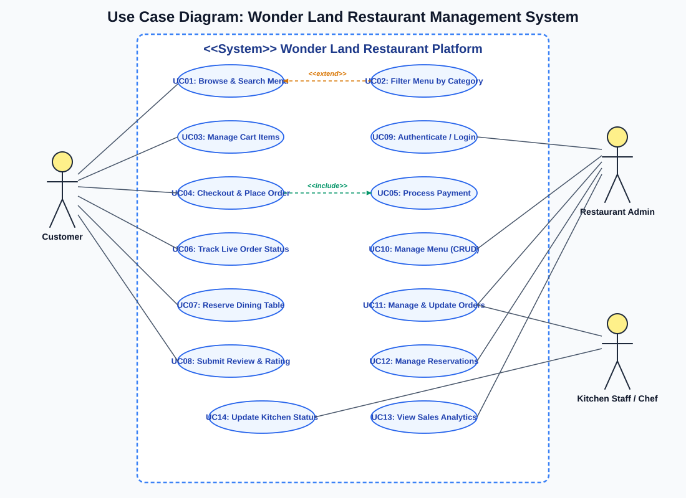
Captures domain classes, visibilities (+, -, #), attributes, operations, inheritance (User ➔ Customer, Admin; Payment ➔ Cash, Card, DigitalWallet), composition (Order 1 ➔ 1..* OrderItem), and aggregation (Category 1 ➔ * MenuItem).
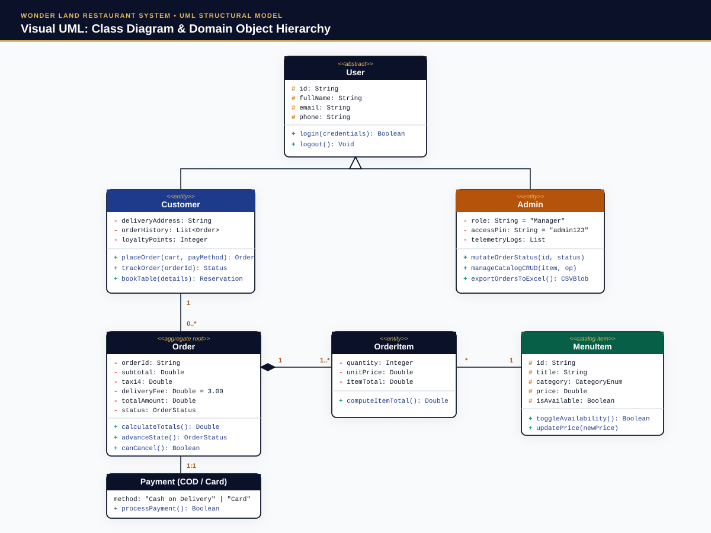
Detailed chronological interaction between Customer, WebGUI, CartController, PaymentGateway, and RestaurantDataStore for dish selection, cart computation, payment approval, and receipt rendering.
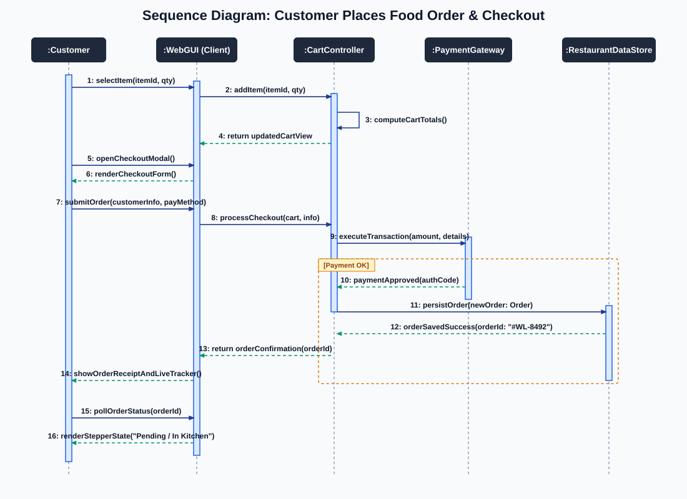
Step-by-step messaging for table booking, capacity validation, slot persistence in DataStore, and instant confirmation toast notification.
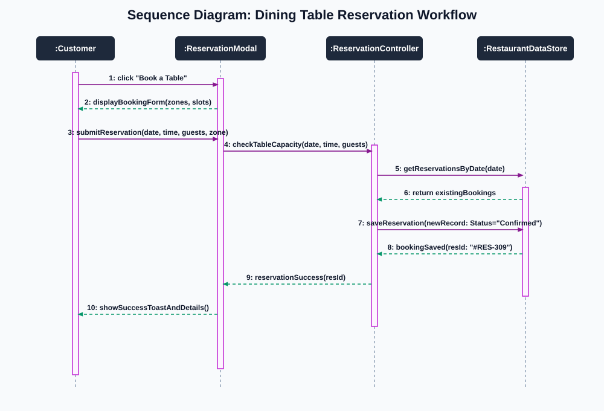
Demonstrates administrative PIN authentication, order lifecycle mutation, and real-time menu catalog creation with instant client synchronization.
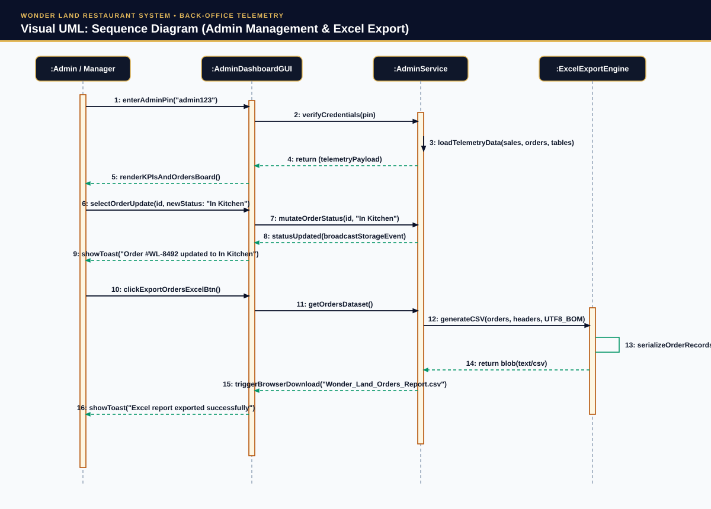
Organized into 4 swimlanes: Customer, Web Application (GUI), Payment Engine, and Kitchen Dispatch. Captures validation decisions, payment branches, and parallel fork/join execution.
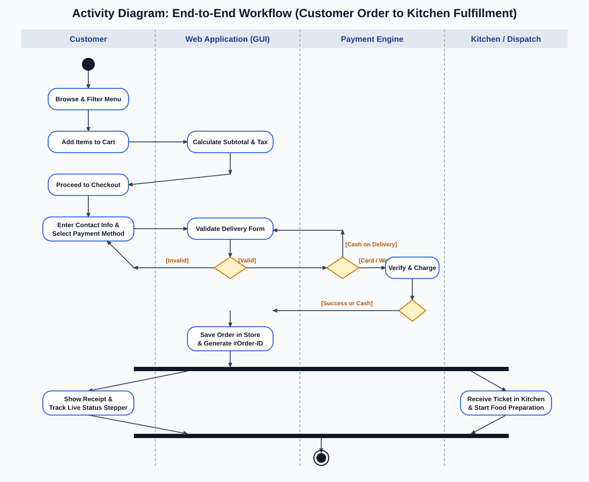
Activity flow across Guest, Reservation System, and Floor Host for seating capacity verification, booking creation, greeting, and table turnover.
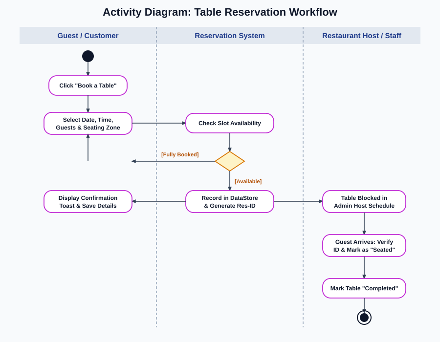
Models the 5 states implemented in the live GUI stepper: Pending ➔ Confirmed ➔ In Kitchen (Cooking) ➔ Out for Delivery ➔ Delivered, plus the cancellation guard condition.
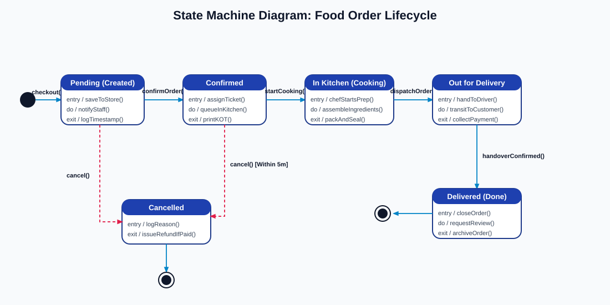
Models booking states: Requested ➔ Confirmed ➔ Seated (Active Dining) ➔ Completed and cancellation transition.
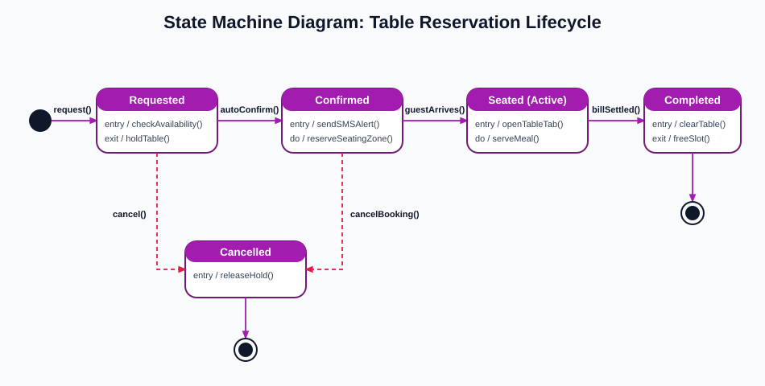
Illustrates the modular subsystems: Presentation Tier (Portal, Cart, Tracker, Admin), Business Services (Order Processing, Catalog, Payment, Analytics), and LocalStorage Persistence Adapter.
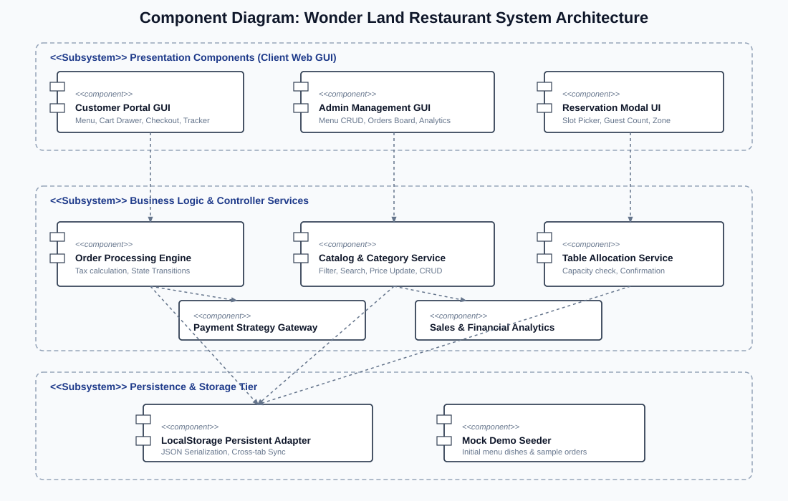
Physical nodes: Client Device (Workstation/Smartphone executing Chrome/Edge/Safari), HTML5 LocalStorage Node, communicating via HTTP/HTTPS to the Web Server Node.
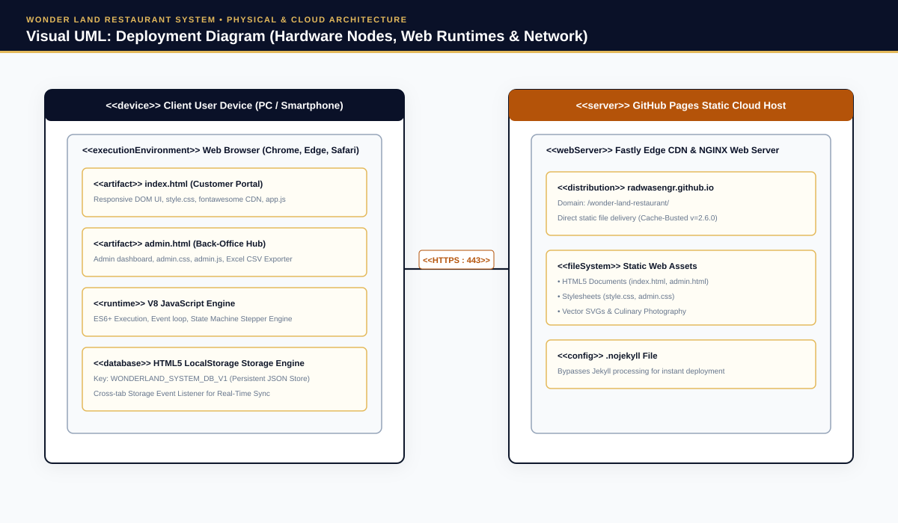
Architectural packaging structure: com.wonderland.presentation, .business, .model, and .data showing strict unidirectional <<import>> rules.
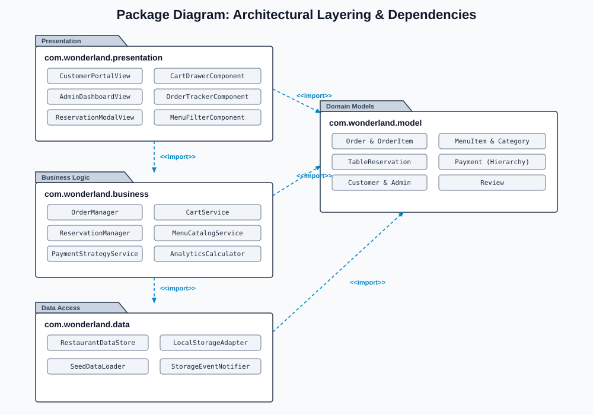
Object interaction collaboration with sequence numbers linking Customer, CartController, OrderManager, PaymentGateway, and RestaurantDataStore.
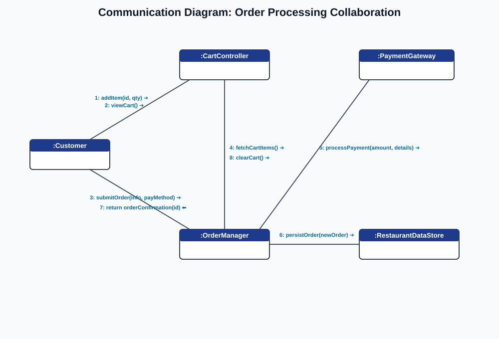
Relational database schema: CUSTOMERS, ORDERS, ORDER_ITEMS, MENU_ITEMS, CATEGORIES, PAYMENTS, TABLE_RESERVATIONS, REVIEWS with PKs, FKs, and crow-foot cardinalities.
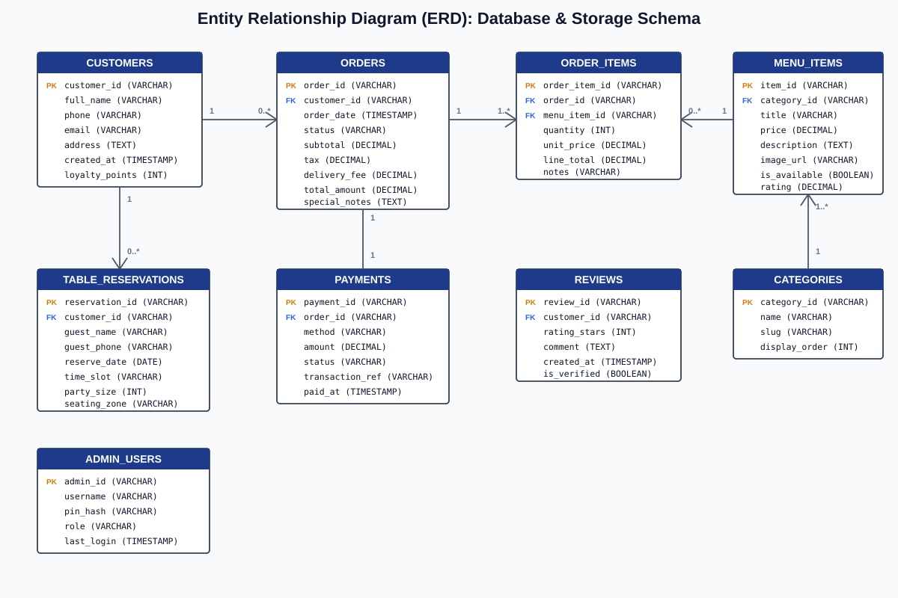
This matrix guarantees that 100% of modeled diagrams are physically realized in code and verifiable in the application GUI:
| UML Diagram Feature | Code Implementation | Live GUI Verification in App |
|---|---|---|
| UC01 / UC02 Browse & Search | app.js: renderDynamicMenu() |
Menu search input (#menuSearchInput) & dynamic category filter buttons. |
| UC03 Manage Cart Items | app.js: addToCart(), updateCartQuantity() |
Slide-out cart drawer (#cartDrawer) with +/- quantity and real-time total updates. |
| UC04 / UC05 Checkout & Pay | app.js: placeOrder(), Order.calculateTotals() |
Checkout modal (#checkoutModal) with Cash on Delivery, Card, and Digital Wallet. |
| UC06 Track Order Status | app.js: renderOrderTracker(order) |
Visual stepper (#trackerModal) with glowing nodes animating through 5 stages. |
| UC07 Table Reservation | app.js: bookTable(resData) |
Reservation modal (#reservationModal) with Date, Time, Guests, and Seating Zone. |
| UC08 Submit Guest Review | app.js: addReview(name, rating, text) |
Review form (#submitReviewForm) with instant live publication to testimonials. |
| UC09 Admin Authentication | admin.js: checkAuth() |
PIN security gate in admin.html (PIN: admin123) with session lock. |
| UC10 Menu Catalog CRUD | admin.js: openDishModal(), deleteDish() |
Admin menu catalog table with Add/Edit dish modal and Available/Sold-Out toggle. |
| UC11 Order Status Mutation | admin.js: handleOrderStatusChange() |
Status selector dropdown in admin.html instantly updates the customer tracker. |
| Order State Machine | States: Pending ➔ Confirmed ➔ Cooking ➔ Delivery ➔ Done | Visual CSS animated stepper with glowing active nodes and progress connectors. |
| Data Persistence Layer | app.js: RestaurantDataStore |
HTML5 LocalStorage key WONDERLAND_SYSTEM_DB_V1 surviving reloads and browser restarts. |
index.html to open the customer front-end in any browser.#WL-101) and click "Track Live Order" to inspect the 5-stage stepper.admin.html. Enter PIN admin123.admin.html. Switch back to index.html to observe the customer tracker update automatically!